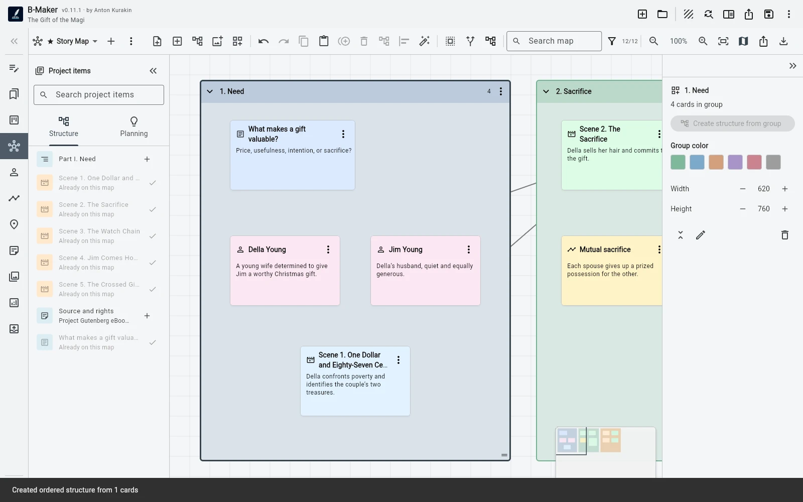

The manuscript tree says what the book is. Idea Map lets you explore what the book might become.
Early thinking is not hierarchical
A scene may belong between two chapters. A research fragment may support three arguments. A character problem may be connected to a plotline and an image before you know where any of them belong in the manuscript.
Putting everything into the tree too early creates fake certainty
If every loose thought must become a chapter, scene, or folder immediately, the structure starts reflecting guesses rather than decisions. The map lets ambiguity remain cheap.
Why an integrated map matters
Chapters, characters, scenes, plotlines, images, and notes can appear on the same board as real project-aware entities. The map does not have to become a second book that drifts out of sync.

The map should disappear from your workflow when it is not useful
If the chapter is already clear, create the chapter and write. Idea Map is not a mandatory planning ritual. It is a workspace for uncertainty, relationships, and nonlinear thought.